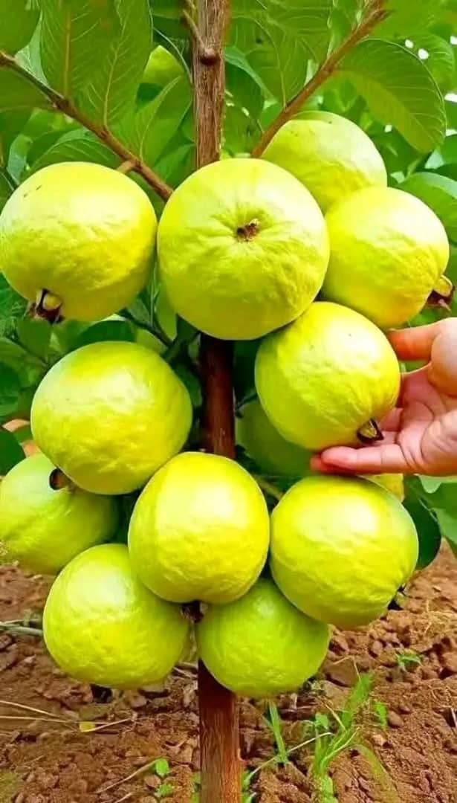

Programmes de formation
Formations continues
.webp)
Gestion des mauvaises herbes
- Identification des mauvaises herbes
- Méthodes de contrôle et de gestion
- Utilisation de produits de traitement biologiques

Grandes cultures
- Choix des variétés et des semences
- Gestion des sols et des écosystèmes
- Optimisation des rendements et de la qualité
.webp)
Horticulture
- Production de légumes et de fruits biologiques
- Stratégies de marketing et commercialisation
Formations spécialisées

Arboriculture fruitière et petits fruits
- Production de fruits biologiques
- Gestion des vergers et des écosystèmes
- Optimisation des rendements et de la qualité
Viticulture biologique
- Production de raisins biologiques
- Gestion des vignobles et des écosystèmes
- Optimisation des rendements et de la qualité
.webp)
Maraîchage sur petite surface
- Production de légumes biologiques
- Gestion des sols et des écosystèmes
- Optimisation des rendements et de la qualité
BTSA ACSE
Conduite et Stratégie de l'Entreprise agricole
Activités
- Gestion d'exploitation agricole biologique
- Analyse des coûts de production
- Stratégies de marketing et commercialisation
Exemples de projets
- Création d'une ferme biologique
- Plan de gestion environnementale
- Analyse de rentabilité
Prêt à vous former ?
Contactez-nous pour t'inscrire à nos prochaines sessions
Réserver ma place sur WhatsApp